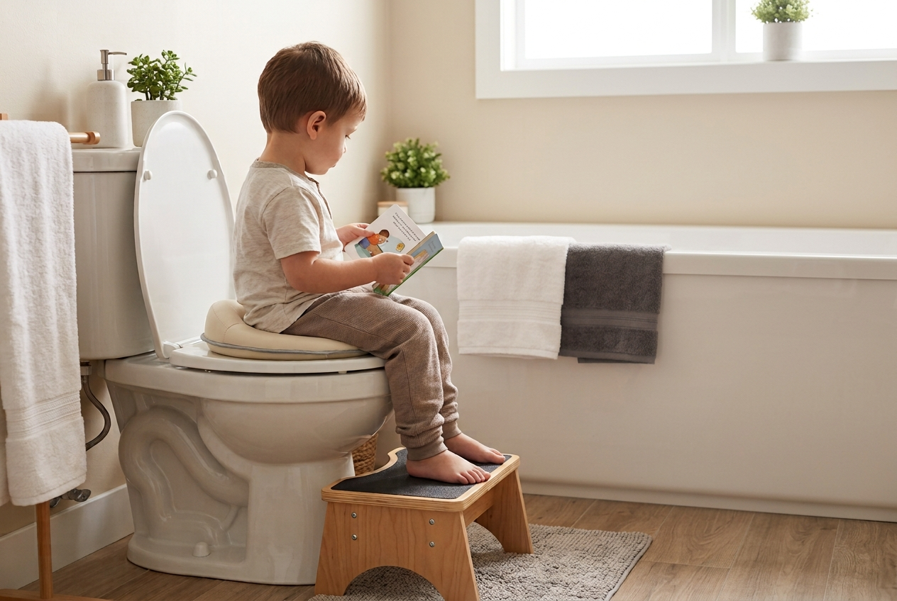

Tuvalet Becerisi ve Tuvalet Problemleri

1. Tuvalet Becerisi
Tuvalet becerisi, çocuğun yalnızca idrarını veya dışkısını tuvalete yapmasını değil; vücudundan gelen içsel sinyalleri fark etmesini, uygun ortamı bulmasını, hazırlanmasını ve gerekli hijyen basamaklarını tamamlamasını kapsayan önemli bir günlük yaşam aktivitesidir.
Süreç; ihtiyacı fark etme, tuvalete ulaşma, kıyafetleri yönetme, güvenli şekilde oturma, temizlik, sifon ve el yıkama gibi birden fazla becerinin birlikte kullanılmasını gerektirir.
2. Tuvalet Becerisi Ne Zaman ve Nasıl Gelişir?
Tuvalet farkındalığı çocuklarda genellikle 18 ile 36. aylar arasında şekillenmeye başlar. Bununla birlikte hazır oluşluk yalnızca yaşa göre değerlendirilmez; fiziksel, bilişsel, iletişimsel, duygusal ve duyusal süreçler birlikte ele alınır.
- İnterosepsiyon: Vücuttan gelen çiş veya kaka sinyallerini fark edebilme.
- İletişim: İhtiyacı söz, jest veya beden diliyle aktarabilme.
- Motor beceriler: Kıyafetleri yönetme, dengeli oturma ve temizlik adımlarını sürdürebilme.
- Duyusal işlemleme: Ses, doku, koku ve sıcaklık gibi uyaranlara verilen tepkiler.
- Duygusal düzenleme: Değişime uyum sağlama ve süreçte oluşan kaygıyla baş edebilme.
3. Yaygın Tuvalet Problemleri
Kaka tutma
Ağrılı deneyimler, beden sinyallerini geç fark etme veya duyusal nedenlerle dışkılamayı erteleme görülebilir.
Klozeti reddetme
Ayakların boşta kalması, sifon sesi, banyo akustiği veya yüzey dokusu çocuğun ortamdan kaçınmasına yol açabilir.
4. Süreci Kolaylaştıran Ergoterapi Stratejileri
- Ayakların desteklenmesi için kaymaz bir basamak kullanın.
- Ses ve ışık hassasiyetlerine göre banyo ortamını düzenleyin.
- Görsel rutinler ve sosyal öykülerle adımları görünür hale getirin.
- Kıyafet, silinme ve el yıkama görevlerini küçük basamaklara ayırın.
- Çocuğun beden sinyallerini sözel olarak adlandırmasına model olun.
5. Ne Zaman Profesyonel Destek Alınmalı?
Tuvalet reddi, uzun süreli tutma, sık kaçırma, belirgin duyusal hassasiyet veya motor beceri güçlükleri devam ediyorsa öncelikle ilgili hekim değerlendirmesi; gerektiğinde ergoterapi değerlendirmesi düşünülebilir.